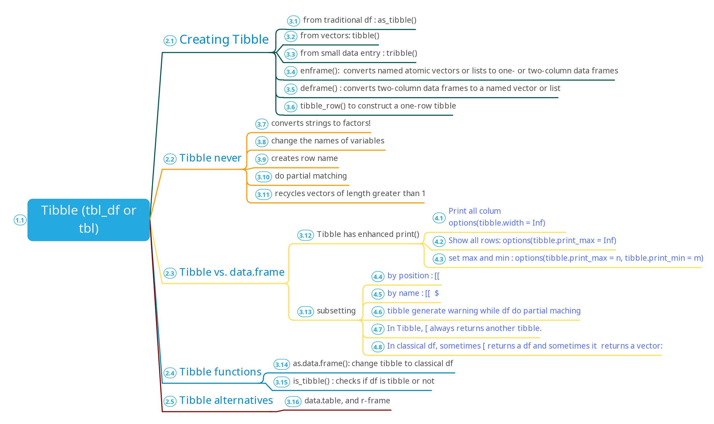
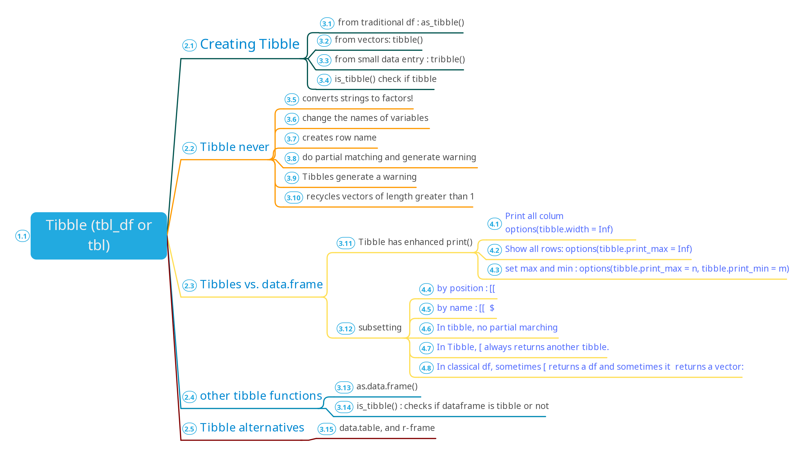

Chapter 10 Tibbles:
Summary of the capter picture
 
10.1 Introduction
Tibble package provides an opinionated data frames that make working in the tidyverse a little easier. They tweak some older behaviours of R’s traditional data.frame to make life a little easier.
A tibble, or tbl_df, is a modern reimagining of the data.frame, keeping what time has proven to be effective, and throwing out what is not. Tibbles are data.frames that are lazy and surly: they do less (i.e. they don’t change variable names or types, and don’t do partial matching) and complain more (e.g. when a variable does not exist).
Tibbles also have an enhanced print() method which makes them easier to use with large datasets containing complex objects.
Why R has many packages?
R is an old language and it’s difficult to change base R without breaking existing code, so most recent innovation occurs in packages.
10.2 Creating tibbles
Convertion from from R’s traditional dataframe to tibble
To change from R’s traditional dataframe to tibble, we use as_tibble() function:
## # A tibble: 150 x 5
## Sepal.Length Sepal.Width Petal.Length Petal.Width Species
## <dbl> <dbl> <dbl> <dbl> <fct>
## 1 5.1 3.5 1.4 0.2 setosa
## 2 4.9 3 1.4 0.2 setosa
## 3 4.7 3.2 1.3 0.2 setosa
## 4 4.6 3.1 1.5 0.2 setosa
## 5 5 3.6 1.4 0.2 setosa
## 6 5.4 3.9 1.7 0.4 setosa
## 7 4.6 3.4 1.4 0.3 setosa
## 8 5 3.4 1.5 0.2 setosa
## 9 4.4 2.9 1.4 0.2 setosa
## 10 4.9 3.1 1.5 0.1 setosa
## # … with 140 more rowsTo create tibble from vectors
To create tibble from vectors we use tibble() function. Note, we put comma , after individual vector as shown below:
## # A tibble: 3 x 4
## x y z p
## <int> <dbl> <dbl> <dbl>
## 1 2 1 5 3
## 2 3 1 10 7
## 3 4 1 17 1310.0.0.1 What data.table does and tibble does not
Tibble never changes the type of the inputs (e.g. it never converts strings to factors!)
Tibble never changes the names of variables
Tibble never creates row names
Tibble can have column names that are not valid R variable names, aka
non-syntactic names.Tibbles are more strict: they never do partial matching,
Tibbles generate a warning if the column you are trying to access does not exist (unlike traditional data.frame).
It only recycles vectors of length 1. This is because recycling vectors of greater lengths is a frequent source of bugs
# `non-syntactic names` example
tb <- tibble(
`:)` = "smile", # note : the variable names are backticks sorrounding them
` ` = "space",
`2000` = "number"
)
tb## # A tibble: 1 x 3
## `:)` ` ` `2000`
## <chr> <chr> <chr>
## 1 smile space numberCreate tibble with small amount of data in code
We can create tibblewith tribble(), short for transposed tibble. tribble() is customised for data entry in code: column headings are defined by formulas (i.e. they start with ~), and entries are separated by commas.
## # A tibble: 2 x 3
## x y z
## <chr> <dbl> <dbl>
## 1 a 2 3.6
## 2 b 1 8.510.3 Tibbles vs. data.frame
Tibbles and data.frame differs significantly in two ways: printing and subsetting.
10.3.1 Printing
Tibbles have a better print method. It prints the first 10 rows, and all the columns that fit on screen.
Tibbles also have an enhanced print() method which makes them easier to use with large datasets containing complex objects.
tibble(
a = lubridate::now() + runif(1e3) * 86400,
b = lubridate::today() + runif(1e3) * 30,
c = 1:1e3,
d = runif(1e3),
e = sample(letters, 1e3, replace = TRUE)
)## # A tibble: 1,000 x 5
## a b c d e
## <dttm> <date> <int> <dbl> <chr>
## 1 2020-09-22 03:12:20 2020-10-10 1 0.348 z
## 2 2020-09-22 05:00:03 2020-09-21 2 0.345 a
## 3 2020-09-21 16:03:43 2020-09-25 3 0.512 l
## 4 2020-09-21 16:15:53 2020-09-28 4 0.588 u
## 5 2020-09-22 13:02:31 2020-10-19 5 0.226 v
## 6 2020-09-22 11:05:12 2020-09-22 6 0.0342 i
## 7 2020-09-22 08:27:56 2020-10-17 7 0.280 q
## 8 2020-09-22 09:25:11 2020-10-11 8 0.406 v
## 9 2020-09-22 12:48:54 2020-10-02 9 0.454 d
## 10 2020-09-21 17:33:53 2020-10-05 10 0.811 g
## # … with 990 more rowsWhat is inf?
Inf and -Inf stands for infinity (or negative infinity) and is a result of storing either a large number or a product that is a result of division by zero. Inf is a reserved word and is – in most cases – product of computations in R language and therefore very rarely a product of data import. Infinite also tells you that the value is not missing and a number!
Print : We can use print() function to print tibble and control number of column and width.
You can also control the default print behaviour by setting options:
options(tibble.print_max = n, tibble.print_min = m): if more than n rows, print only m rows. Use options(tibble.print_min = Inf) to always show all rows.
Use options(tibble.width = Inf) to always print all columns, regardless of the width of the screen.
## # A tibble: 336,776 x 19
## year month day dep_time sched_dep_time dep_delay arr_time sched_arr_time
## <int> <int> <int> <int> <int> <dbl> <int> <int>
## 1 2013 1 1 517 515 2 830 819
## 2 2013 1 1 533 529 4 850 830
## 3 2013 1 1 542 540 2 923 850
## 4 2013 1 1 544 545 -1 1004 1022
## # … with 336,772 more rows, and 11 more variables: arr_delay <dbl>,
## # carrier <chr>, flight <int>, tailnum <chr>, origin <chr>, dest <chr>,
## # air_time <dbl>, distance <dbl>, hour <dbl>, minute <dbl>, time_hour <dttm>RStudio’s built-in data viewer: You can use RStudio’s built-in data viewer to get a scrollable view of the complete dataset.
10.3.2 Subsetting
Two ways to subset dataframe: using $ and [[.
[[ extract by name or position;
$ extracts only by name but is a little less typing.
## # A tibble: 5 x 3
## x y z
## <int> <dbl> <dbl>
## 1 1 1 2
## 2 2 1 5
## 3 3 1 10
## 4 4 1 17
## 5 5 1 2610.1 Changing tibble back to traditional data frame
Some functions were developed before tibble, so they dont support it, and you may need to converttibbleto Rs traditional dataframe to work with such functions. Luckily, a function as.data.frame() turn a tibble back to a data.frame
## [1] "data.frame"The main reason that some older functions don’t work with tibble is the [ function. With base R data frames, [ sometimes returns a data frame, and sometimes returns a vector. With tibbles, [ always returns another tibble.
10.1.0.1 Recylcing: Tibble Vs Dataframe
When constructing a tibble, only values of length 1 are recycled. The first column with length different to one determines the number of rows in the tibble, conflicts lead to an error. This also extends to tibbles with zero rows, which is sometimes important for programming:
The example below shows an example where length 1 vector is recycle.
## # A tibble: 3 x 2
## a b
## <dbl> <int>
## 1 1 1
## 2 1 2
## 3 1 3In the example below, the vector c of length 2 cannot be recycle and it will generate an error:
10.2 10.5 Exercises
Question 1
How can you tell if an object is a tibble? (Hint: try printing mtcars, which is a regular data frame)
## [1] "data.frame"## [1] "tbl_df" "tbl" "data.frame"So, given any dataframe, when you check its class, it will be either traditional R’s dataframe or tibble.
Traditional R’s dataframe output will data.frame
Tibble output will be tbl_df" "tbl" "data.frame
Question 2
Compare and contrast the following operations on a data.frame and equivalent tibble. What is different? Why might the default data frame behaviours cause you frustration?
Traditional R’s Dataframe
## [1] a
## Levels: a## [1] a
## Levels: a## abc xyz
## 1 1 aTibble Dataframe
## Warning: Unknown or uninitialised column: `x`.## NULL## # A tibble: 1 x 1
## xyz
## <fct>
## 1 a## # A tibble: 1 x 2
## abc xyz
## <dbl> <fct>
## 1 1 aWhat is different? Using Tibble, it reports that x is an ukown variable, while R’ dataframe, return a as value for x variable.
Why might the default data frame behaviours cause you frustration? Because it does partial marching. It marches x with xyz